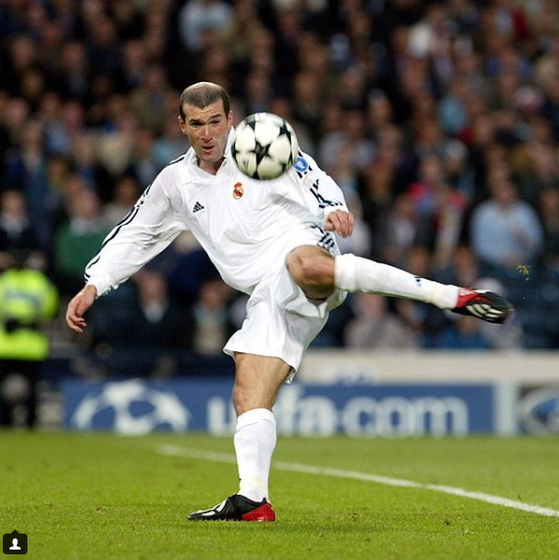

the france legends of soccer

지네딘 지단
프랑스 국적의 축구 선수 출신 감독.
선수 시절 유벤투스와 레알 마드리드에서 커리어를 보내며 세리에 A 2회, 라리가 1회, UCL 1회 등 수많은 우승컵을 들어올렸고 프랑스 대표팀에서도 1998 프랑스 월드컵ㆍ유로 2000 우승을 이끌었다. 또한 FIFA 월드컵 골든볼, UEFA 유로 MVP, 리그 1 MVP, 세리에 A MVP, 발롱도르, FIFA 올해의 선수, UEFA 올해의 클럽 축구 선수에 모두 선정되며 무수한 개인 커리어도 쌓았다. 즉, FA컵을 제외하고 자신이 참가한 모든 메이저 대회에서 우승을 한 번 이상 차지해 보았고 최우수 선수에도 한 번 이상씩은 선정된 셈이다.[15]
이후 레알 마드리드 감독으로 부임해 UCL 3연패를 달성하며 카를로 안첼로티, 밥 페이즐리와 함께 UEFA 챔피언스 리그 역대 최다 우승 감독으로 올라섰다. 명선수는 명지도자가 될 수 없다의 명제를 깨트린 중요한 인물로써, 현대판 최고의 선수에서 최고의 감독을 상징하고 있다